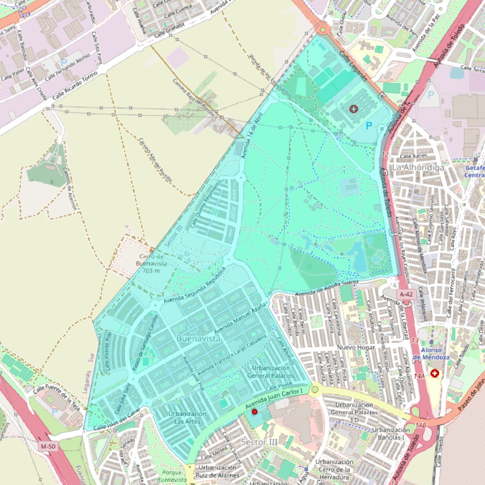

Getafe · Arciprestazgo de Getafe · Diócesis de Getafe

De cada 100 habitantes, 28 tienen menos de 18 años, 9 tienen 65 o más y 8 han nacido en otro país.
| Parroquia | Arciprestazgo | Diócesis | |
|---|---|---|---|
| Habitantes (2025) | 14.200 | 195.628 | 1.729.840 |
| Habitantes por km² | 5.828 | 2.485 | 751 |
| Edad media (2024) | 35,0 años | 42,9 años | 42,3 años |
| Menores de 18 (2024) | 27,7 % | 17,9 % | 18,2 % |
| 65 o más (2025) | 8,6 % | 19,5 % | 18,4 % |
| Índice de envejecimiento (2025) | 33 | 134 | 127 |
| Nacidos en otro país (2025) | 7,6 % | 20,4 % | 20,3 % |
| Renta por persona (2024) | 19.900 € | 16.700 € | 16.000 € |
| Personas por hogar (2024) | 2,59 | 2,63 | 2,80 |
| Hogares de una persona (2024) | 26,5 % | 24,1 % | 21,0 % |
| Estudios superiores (2024) | 57,3 % | 35,2 % | 32,4 % |
| Paro (2024) | 4,9 % | 8,4 % | 9,1 % |
Cifras de viviendas según las fuentes citadas en la ficha de cada desarrollo, en la sección «Previsión de desarrollos urbanísticos».